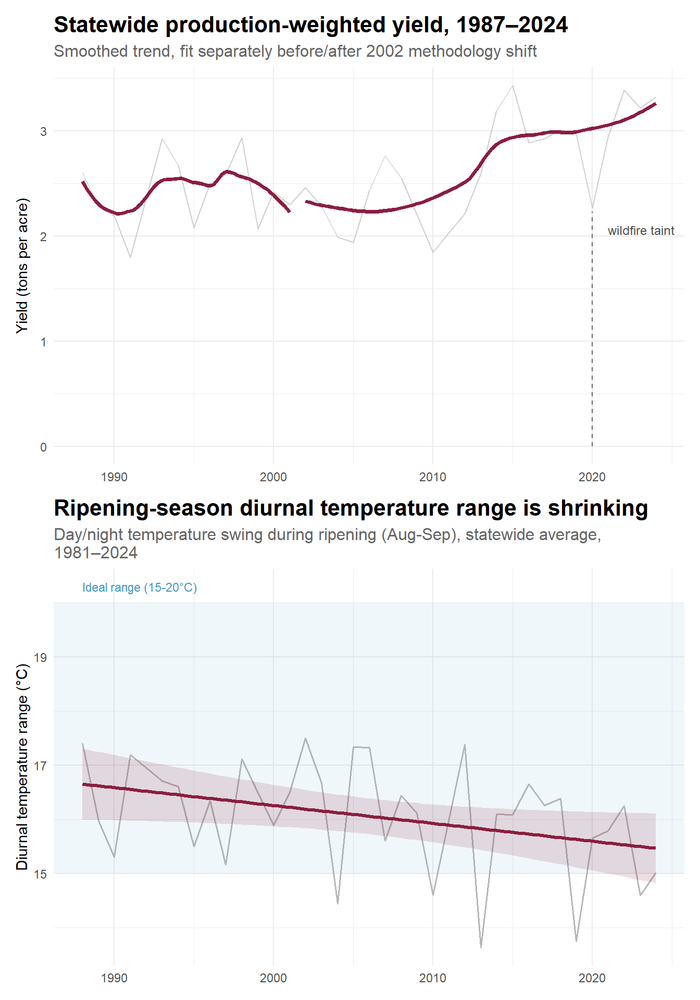

Conclusion
Our original research question asked how climate has affected wine production in Oregon’s growing regions, and how that relationship has evolved since 1987. Taken together, our statistical and machine learning findings point to an answer that is more nuanced than either “climate change is hurting Oregon wine” or “climate change hasn’t mattered yet.” Both are partly true, depending on which outcome, and which variety is the focus.
The climate trend itself is unambiguous. Growing degree days, peak summer temperature, and heat stress days have all risen over the past four decades, while the ripening-season diurnal temperature range, the day-night swing that gave Oregon’s Willamette Valley its Burgundy-like suitability for Pinot Noir in the first place, has quietly narrowed. Yield, however, has not shown the damage that trend alone might suggest. Statewide production-weighted yield has climbed for decades, our correlation analysis found warmer conditions generally corresponding to higher yield rather than lower, and our staged SVM model could explain at most 6.9% of yield’s variance from climate and variety alone, at its single best-performing stage. That is independent, held-out confirmation that climate is not yet the dominant force behind Oregon’s yield outcomes.
Figure 12 makes this tension concrete. The metric the industry measures and reports every year, yield, has moved in one direction. The metric that actually explains why Oregon built its reputation on Pinot Noir in the first place has moved in the other, and it does not appear anywhere in Oregon’s production statistics. Our machine learning results reinforce just how real that separation is: ripening diurnal range did not rank among the top five most important features for predicting yield at any stage of the growing season, including the harvest-stage model where it was directly available to the model as a feature. A grower, or a researcher, looking at yield alone has no reason to suspect anything has changed.
That resilience is also not evenly distributed across varieties, and this is where the machine learning phase added something the statistical analysis alone could only gesture toward. When climate information was thin, in the spring-only model, the model fell back almost entirely on which variety it was predicting rather than on climate itself, direct evidence that variety identity, not climate, is the first-order determinant of yield outcomes at this stage of Oregon’s warming. Once summer climate features entered, growing degree days emerged as a genuine second contributor alongside variety, but variety identity remained the single most important feature at every stage we tested, spring, summer, and harvest alike. And the residual diagnostics showed that the varieties the model struggles to characterize, Cabernet Sauvignon, Merlot, and Pinot Blanc in particular, are disproportionately the state’s minor plantings. We have the least reliable climate-sensitivity evidence for exactly the varieties with the smallest foothold to begin with, and the thinnest historical record to learn from.
Our post-2020 case study reinforces this same theme from a different angle, and complicates the simplest version of it. If weather were leaving a uniform mark across varieties, we would expect the variety our earlier analysis flagged as hit hardest by 2020 wildfire smoke, Pinot Noir, to also be the hardest for a climate model to explain across the recovery years that followed. It is not. Once the window widens to 2020 through 2024, Pinot Noir’s yield is among the best-explained of any variety, and consistently better than a climate-only model would predict, evidence of a genuine recovery rather than a lingering instability. The varieties our summer model struggles with most across this same period, Pinot Blanc and Riesling, are not the ones the smoke-taint story would have predicted, and Pinot Blanc’s result rests on a sample too thin to weigh heavily on its own. Weather does appear to leave a more visible mark on some varieties than others, in other words, but not necessarily the ones a single dramatic year would lead us to expect, and not always for reasons a climate-and-variety model alone can identify.
Read alongside the industry’s own documented response, an interesting picture emerges.Over three decades, the consolidation around Pinot Noir and the decline in Chardonnay and Riesling shares occurred over the same period that Oregon’s climate indicators shifted. Pinot Noir shows a moderate positive yield relationship with heat accumulation in our data, comparable to Pinot Gris and stronger than several other varieties, so nothing in our yield findings suggests this consolidation has come at a yield cost. But the diurnal-range finding is the one piece of evidence in this entire report that has not yet shown up in a production number, a leading indicator for a wine-quality risk that a yield-only model, ours included, is structurally unable to see.
Limitations
Several limitations shape how far these findings should be read. Our usable machine learning sample, roughly 1,000 region-by-variety-year observations after filtering, is small enough that individual thin varieties carry real uncertainty even after correcting for class imbalance through inverse-frequency sample weighting; we verified this weighting scheme against the alternative of synthetic oversampling (SMOTE) and found it produced more consistent train and test distributions for this dataset. An R² below 0.07 at every stage means our model should be read as evidence about where and for which varieties climate signal is present in the yield record, not as a production-forecasting tool. Umpqua’s yield pattern, flat and among the lowest of any region despite being the third-warmest by growing degree days, remains unexplained by the climate variables in our dataset and is flagged rather than resolved. Because yield was our only modeled outcome, these results say nothing directly about price or the qualitative characteristics that matter most to Oregon’s fine wine reputation, a limitation that is itself consistent with, rather than in tension with, our finding that harvest-window features added no predictive value for yield specifically.
Future work
The honest answer to our original research question is that Oregon’s climate-wine relationship has evolved in a way that is currently invisible in the production data, and will most plausibly first appear in the fruit quality of the state’s most heat-sensitive, most heavily planted variety. That is precisely the risk this project’s founding motivation, building a public, climate-linked Oregon wine dataset where none currently exists, set out to help detect, and precisely where we would point future work: extending this model to a genuine quality proxy, such as price premium or critic-score data, rather than yield alone, disaggregating the thin varieties our current sample cannot yet characterize with confidence as more years of data accumulate, and extending the comparison to California and Washington that our original proposal envisioned but our first-phase data constraints did not yet allow
| Variety | Avg yield (tons/acre) | Avg harvested acres |
|---|---|---|
| Pinot Noir | 2.47 | 1965 |
| Pinot Gris | 2.85 | 496 |
| Chardonnay | 2.70 | 265 |
| Cabernet Savignon | 2.22 | 116 |
| Merlot | 2.36 | 95 |
| Pinot Blanc | 3.21 | 52 |
| Gewurztraminer | 2.34 | 34 |